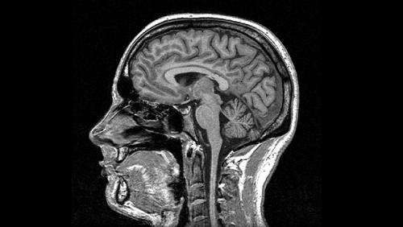
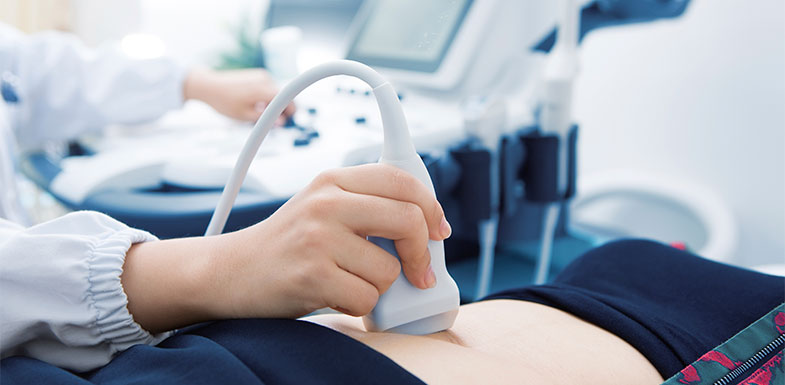
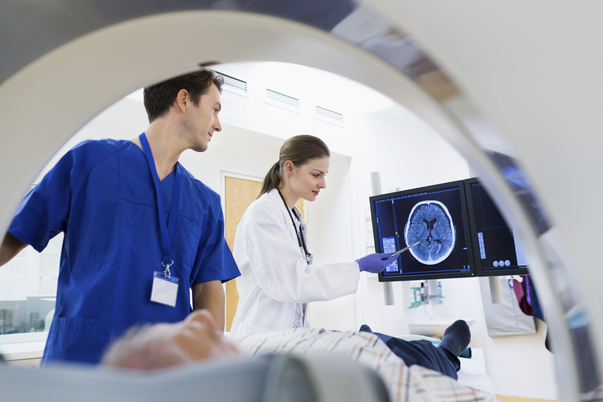
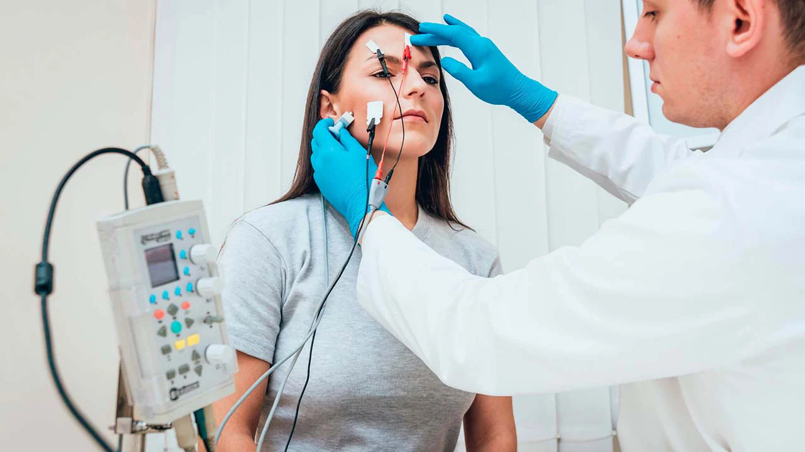
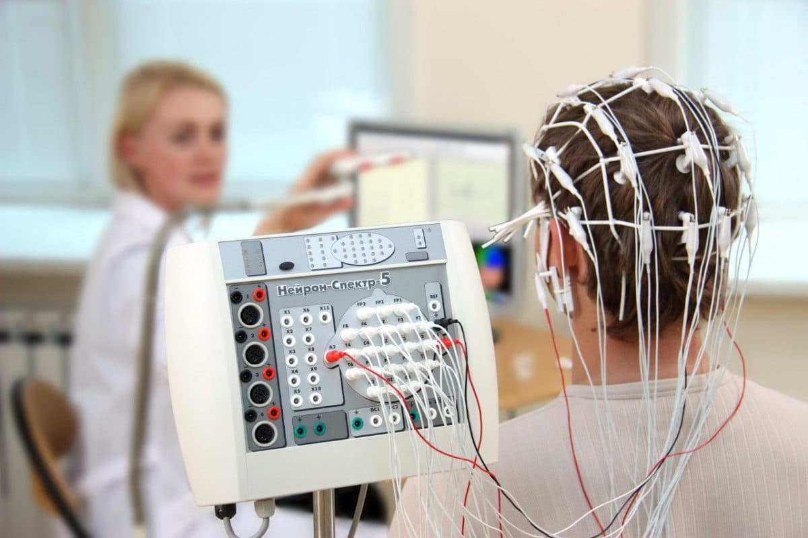

Для точного встановлення діагнозу та призначення належного лікування застосовується комплекс методів обстеження, які можна розділити на кілька груп
Методи обстеження
- 
-
Магнітно-резонансна томографія (МРТ)
МРТ - це сучасний безпечний метод медичної діагностики для отримання детальних зображень внутрішніх органів та тканин. Дозволяє лікарям отримувати високоякісні тривимірні зображення, без іонізуючого випромінювання, для діагностики різних патологій та захворювань
-
Ультразвукова допплерографія судин голови та шиї
Метод медичного обстеження, що використовує ультразвук для детального вивчення кровоносних судин. Ця процедура дозволяє оцінити кровотік, виявити можливі порушення в кровообігу та забезпечує важливі дані для діагностики різних судинних захворювань голови та шиї.
- 
-

-
Рентгенографія
Рентгенологічне дослідження є методом медичного обстеження, який використовує рентгенівське випромінювання для отримання зображень внутрішніх структур органів та тканин. Цей безболісний та швидкий метод дозволяє лікарям визначити структуру кісток та виявити можливі патології, що робить його важливим інструментом в точній діагностиці різних захворювань.
-
Комп'ютерна томографія
КТ - це метод обстеження, який використовує комп'ютер та рентгенівське випромінювання для отримання детальних зображень внутрішніх структур тіла. КТ використовується для діагностики різних захворювань, включаючи рак, травми та інфекції. Цей метод надає детальну інформацію про будь-яку частину тіла та допомагає лікарям планувати лікування та втручання.
- 
- 
-
Електронейроміографія
ЕНМГ - це метод діагностики, який використовується для вивчення електричної активності м'язів та передачі сигналів у нервово-м'язовому з'єднанні. ЕНМГ використовується для визначення функціонального стану м'язів та нервової системи. Цей метод дозволяє лікарям виявляти патології, такі як нервові ушкодження, м'язові захворювання та інші порушення. Результати ЕНМГ можуть допомогти в уточненні діагнозу та розробці ефективного плану лікування для пацієнта.
-
Електроенцефалографія
Електроенцефалографія (ЕЕГ) - неінвазивний метод діагностики, який фіксує електричну активність головного мозку. Завдяки точним записам електричних сигналів, ЕЕГ дозволяє об'єктивно оцінити функціонування мозку та виявити різні нейрологічні порушення, такі як епілепсія чи розлади сну. Результати ЕЕГ використовуються для індивідуалізації планів лікування та моніторингу змін у мозковій активності пацієнта.
- 
-
Лабораторні методи
Аналізи та дослідження біологічних матеріалів (крові, сечі, слини тощо), дозволяють отримати об'єктивну інформацію про стан організму та виявити патології чи захворювання. Методи важливі для визначення різноманітних показників, які можуть вказувати на наявність або розвиток конкретної хвороби та дозволяють лікарям отримати точну інформацію про функції органів і систем, виявити аномалії та встановити діагноз.